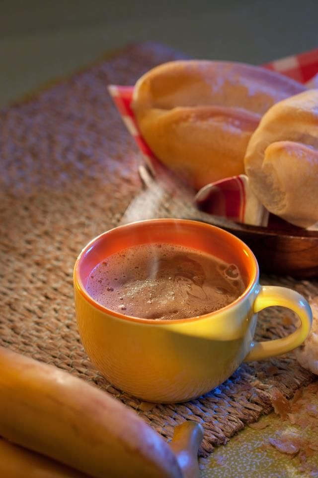

Pan con chocolate

Ingredientes:
Pan
- Pan de slice
- Mantequilla (Opcional)
Chocolate
- Chocalate de Swiss Miss
- Leche o Aqua
Materiales:
- Cuchillo de mantequilla
- Tostadera
- Vaso
- Cuchara o Tenedor
Pasos:
- Pon un chin de Agua (la cantidad depende de cuanto coditos vas querer hacer) a hervir en un Caldero por 8 minutos a fuego mediano.
- Echa una cantidad de coditos al caldero con la agua hervida para que se cocinen. Solamente echa la cantidad de coditos que te vas a comer (obviamente).